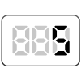

【005】出力のバリエーション

- プロンプト例
JavaScriptでtypeofを使って型の判定するバリエーションを作って
型の判定には、typeofという演算子を使います
typeof 値
1️⃣ 基本的な型チェック
typeof 123 // "number" typeof 'hello' // "string" typeof true // "boolean" typeof undefined // "undefined" typeof null // "object" ⚠️注意 typeof {} // "object" typeof [] // "object" typeof function(){} // "function" typeof Symbol() // "symbol" typeof 10n // "bigint"
2️⃣ よく使う判定パターン集
数値チェック
if (typeof x === 'number') { console.log('数値です'); }
文字列チェック
if (typeof x === 'string') { console.log('文字列です'); }
真偽値チェック
if (typeof x === 'boolean') { console.log('boolean型です'); }
関数チェック
if (typeof fn === 'function') { fn(); }
undefinedチェック
if (typeof x === 'undefined') { console.log('未定義です'); }
3️⃣ null / 配列 / オブジェクトの正しい判定
⚠️ 注意：typeof null === 'object' は有名なJSのバグ
null判定
if (x === null) { console.log('nullです'); }
配列判定
if (Array.isArray(x)) { console.log('配列です'); }
オブジェクト判定（純オブジェクト）
if (typeof x === 'object' && x !== null && !Array.isArray(x)) { console.log('オブジェクトです'); }
4️⃣ よくある罠まとめ
| 値 | typeof結果 |
|---|---|
| null | "object" ⚠️ |
| [] | "object" ⚠️ |
| {} | "object" |
| NaN | "number" ⚠️ |
練習問題
- 以下の変数の型を出力する
//文字列'テキスト'を変数 a に代入して変数の型を出力 //数値 2026 を変数 b に代入して変数の型を出力 //真偽値 false を変数 c に代入して変数の型を出力 //undefined を変数 d に代入して変数の型を出力 //null を変数 e に代入して変数の型を出力 //配列 ['配列'] を変数 f に代入して変数の型を出力 //関数を変数 g に代入して変数の型を出力
解答例
//文字列'テキスト'を変数 a に代入して変数の型を出力 console.log(typeof(a = 'テキスト')); //数値 2025 を変数 b に代入して変数の型を出力 console.log(typeof(b = 2026)); //真偽値 false を変数 c に代入して変数の型を出力 console.log(typeof(c = false)); //undefined を変数 d に代入して変数の型を出力 console.log(typeof(d = undefined)); //null を変数 e に代入して変数の型を出力 console.log(typeof(e = null)); //配列 ['配列'] を変数 f に代入して変数の型を出力 console.log(typeof(f = ['配列'])); //関数を変数 g に代入して変数の型を出力 console.log(typeof(g = function(){}));